|
|
HELP FIND THE FOLLOWING LOCATIONS
PAGE 83
THE
SAINT: The
Smart Detective (John Moxey:
February 1965)
Knightsbridge, SW1
- The Volvo, with Simon
and Janice Dixon aboard is being hotly pursued by Swann and Miller’s
car
(jKnightsbridge across the junction with Albert Gate).
(Identified by Marishka von Saatz, July 2012)
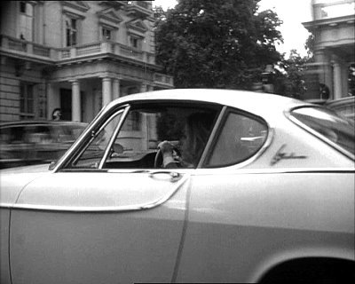
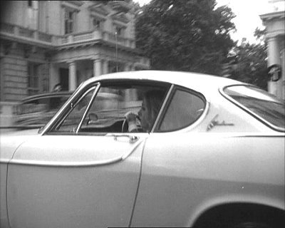
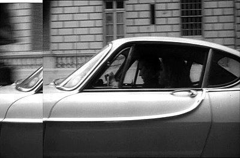
Unknown 1 - Simon Templar drives along a country road, in his Volvo, on his way to take Janice Dixon in his Volvo to ‘Aunt Prudence’.
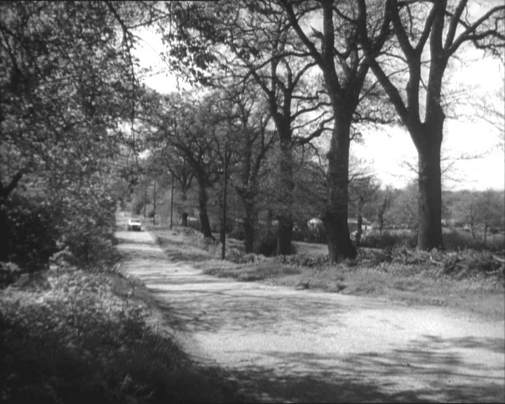
Unknown 2 - Simon Templar takes Janice Dixon in his Volvo to stay at a safe house run owned by ‘Aunt Prudence’. Later Simon Templar races into the property in his Volvo after Aunt Prudence calls him for help.
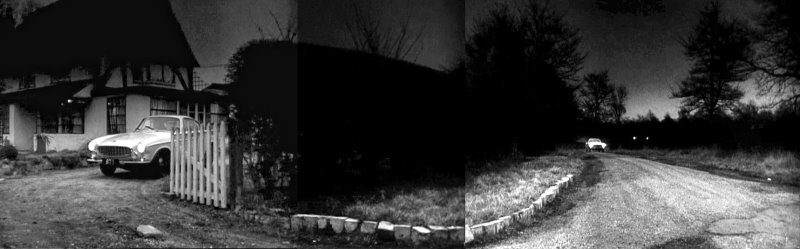
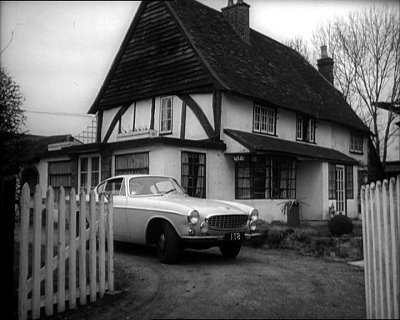
Unknown 3 - Simon Templar arrives at the gates of the Northbank Yacht club, Maidenhead, in his Volvo, looking for the ’Miss Dallas’ mentioned in Roy Dixon’s address book.
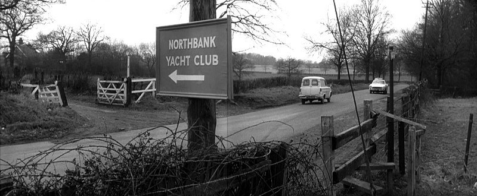
Unknown 4 - Simon Templar goe to the Northbank Yacht club, Maidenhead, looking for the ’Miss Dallas’ mentioned in Roy Dixon’s address book.
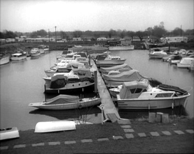
Unknown 5 - Simon Templar races in his Volvo towards the home Aunt Prudence after she manages to call for help.
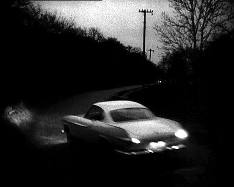
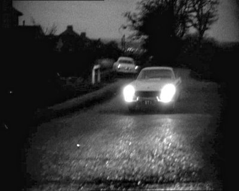
London
Road, Shenley, near the junction with Pound Lane: -
Swann and Miller are manning a check point
near Maidenhead and call Peter Corrio
when
Templar’s Volvo passes.
Identified by Geoff Dodd.
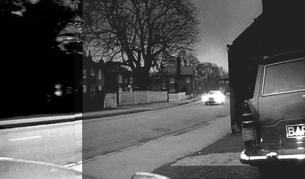
N53: Butterfly Lane - approaching Slades Farm
- Swann and Miller
follow Templar’s Volvo all the way to the yacht club in Maidenhead.
(Identified by Geoff Dodd, November 2023)
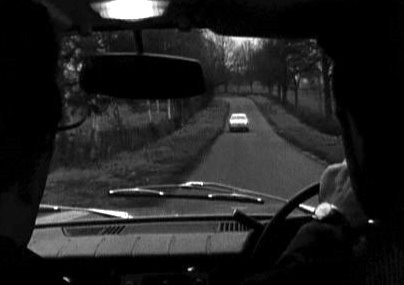
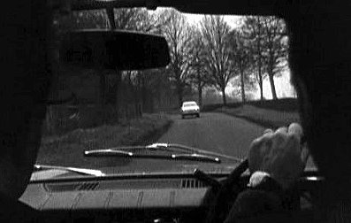
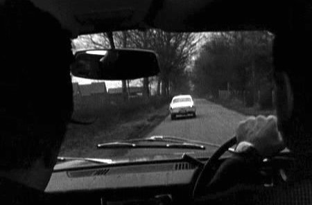
 Earls
Lane heading towards Deeves
Hall?
Earls
Lane heading towards Deeves
Hall?
Unknown 2 - Swann and Miller follow Templar’s Volvo all the way to the yacht club in Maidenhead.
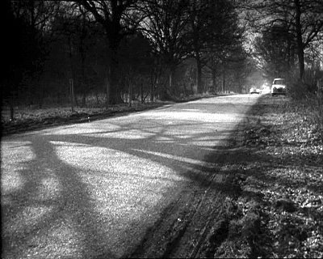
 Probably Butterfly Lane as well - driving the other way.
Probably Butterfly Lane as well - driving the other way.
Duchess
Street/Mansfield Street, W1
- On the night of his intended robbery Peter Corrio
drives his 'E' Type Jaguar
through the streets of London towards the Westminster Museum.
(Identified by Adrian Grepnold,
October 2009)

Think you know a spot? Need a bigger image? Email me.
< Previous | Index | Avengerland | Next >
Copyright © 2021 Anthony R. McKay